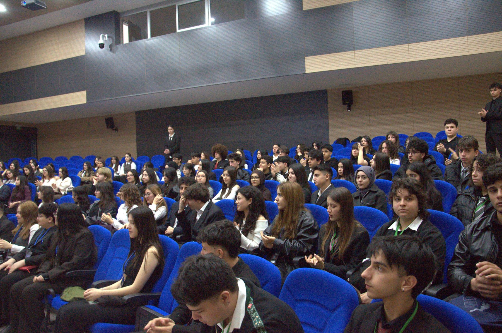
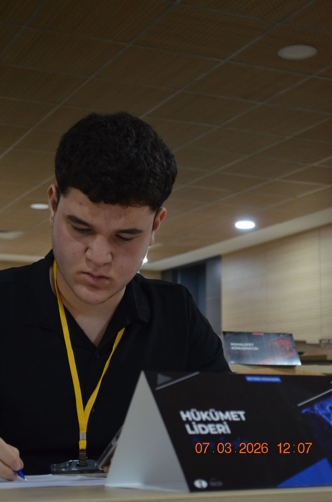
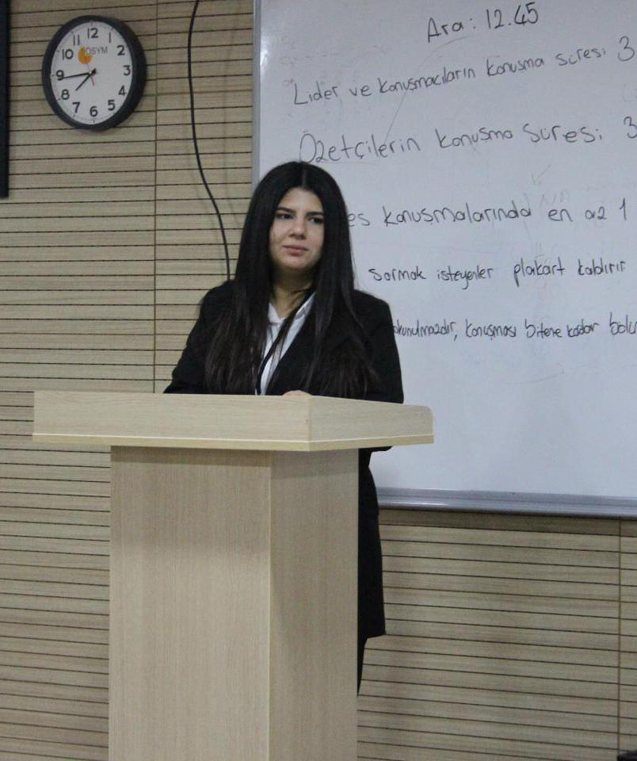
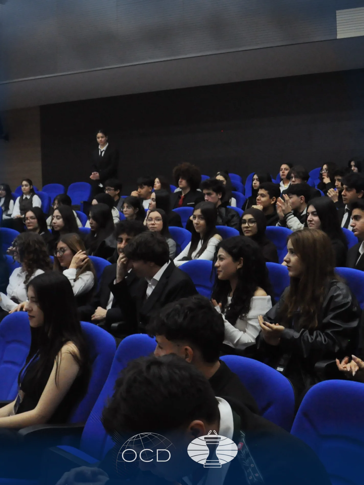

Araştır ve çözümle
Bir görüşün dayanaklarını bul, kanıtları değerlendir.

Retorik Münazara; düşüncenin özgürce ifade edildiği, fikirlerin tartışmayla geliştiği ve bireylerin birlikte güçlendiği bir platform.
RETORİK, Adana merkezli münazara ve kişisel gelişim topluluğudur. Turnuvalar, eğitimler ve etkinliklerle düşünme ve ifade becerilerini güçlendirir. Üyelerimizi yalnızca konuşan değil, fikrini temellendirebilen bireyler olarak yetiştiririz.
Adana
Turnuvalar, eğitimler ve etkinlikler


RETORİK, turnuvalar, eğitimler ve etkinliklerle düşünme ve ifade becerilerini güçlendirir.
Turnuvalarımız ve Open Council Debate formatı, araştırmaya dayalı argüman kurma ve etkili hitabet için alan açar.
Çukurova Genç Meclis çalışmalarıyla katılımcılar temsil, müzakere ve ortak karar süreçlerini deneyimler.
Forum ve topluluk etkinliklerinde güncel fikirler paylaşılır, yeni bakış açıları saygılı bir tartışmayla ele alınır.
Bir iddiayı savunmak, yalnızca iyi konuşmak değildir. Araştırmak, gerekçeleri tartmak ve karşıt görüşü gerçekten dinlemekle başlar.
RETORİK’te farklı perspektiflerle karşılaşmak düşünceyi keskinleştirir. Katılımcılar argüman kurar, kanıtları analiz eder ve saygılı bir tartışma içinde karşı argümanlara yanıt verir. Böylece etkili hitabet, eleştirel düşünme ve fikirleri özgürce ifade etme birlikte gelişir.
Faaliyetlerimizi keşfet
Bir görüşün dayanaklarını bul, kanıtları değerlendir.
Farklı perspektifleri anlamaya çalış, sorularla derinleş.
Fikrini açıkça savun, karşı argümana saygıyla yanıt ver.
Münazara, forum ve gençlik çalışmalarımızdan seçilmiş organizasyonlar.
Organizasyonlar yükleniyor…
RETORİK etkinliklerinden ve topluluk çalışmalarından kareler.
RETORİK hakkında temel bilgiler.
RETORİK, Adana merkezli münazara ve kişisel gelişim topluluğudur. Turnuvalar, eğitimler ve etkinliklerle düşünme ve ifade becerilerini güçlendirir.
İngiliz Parlamenter Sistemde Hükümet ve Muhalefet tarafları, açılış ve kapanış takımlarından oluşur. RETORİK ayrıca Open Council Debate (OCD) sistemini geliştirmiştir.
Münazara turnuvaları, forumlar, eğitimler ve genç meclis çalışmaları düzenliyoruz. Tamamlanan organizasyonlar ve yeni duyurular için etkinlik arşivimizi inceleyebilirsiniz.
Kulüp başvuru formunu kullanabilirsiniz.
retorikmunazara01@gmail.com adresinden veya @retorik.munazara sosyal medya hesaplarından ulaşabilirsiniz.
RETORİK Münazara topluluğuna katılmak için başvuru formunu kullanın.
RETORİK ile iletişime geçin.